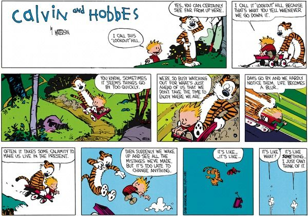
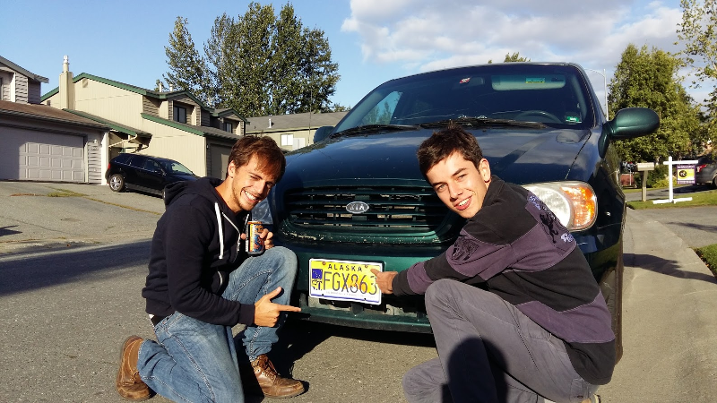

Épilogue - Il y a des trésors partout
Voici maintenant deux mois que notre aventure avec Antoine a pris fin. Deux mois qui nous ont permis de réfléchir et de prendre un peu de recul sur tout ce qu'on a vécu. A l'heure du bilan, que retient-on d'une traversée de 7 mois, en duo, de l'Amérique du Nord au Sud ?
Pour m'aider je vais refaire appel aux deux héros que nous avons en commun avec Antoine : Calvin & Hobbes. Souvenez-vous il y a un an, juste avant notre départ, je vous partageais les 10 commandements de notre voyage, les 10 principes que nous nous étions engagé à suivre tout au long de l'aventure, le tout illustré par les 2 personnages de notre BD préférée. Voyons voir ce qu'il en a été réellement...
1 - Passer du temps avec ses amis
Une question que vous vous posez tous : est-ce qu'on se supporte encore avec Antoine ? C'est vrai que pendant 7 mois on a vécu côte-à-côte (pour les blagues sur Brokeback Mountain c'est maintenant) mais finalement une fois que je me suis habitué aux ronflements d'Antoine et que lui s'est adapté à ma lenteur pour manger tout s'est très bien passé :) Plus sérieusement, comme dans toute amitié on a eu de grands débats, on a parfois pas été d'accord, on s'est même peut être engueulé une fois (mais bon c'est parce qu'Antoine avait faim) mais en fin de compte on a vécu des moments vraiment forts ensemble dont on se souviendra tous les deux toute notre vie. On a acheté notre première voiture ensemble, on s'est relayé pendant plus de 20,000 kilomètres pour la conduire d'Anchorage jusqu'à Phoenix, on a appris ensemble à monter et démonter un camp en un instant, à faire du cheval, à conduire un tracteur, à faire du surf, à parler espagnol, à escalader des volcans, à produire du vin et tellement plus de choses ! En fait je ne pourrais pas trouver mieux que la formulation de Calvin vis-à-vis de Hobbes pour décrire notre amitié avec Antoine aujourd'hui " Les bons vrais amis sont durs à trouver, difficiles à perdre et impossibles à oublier. "
Mais Aquamerica ça a aussi été l'occasion de passer du temps avec nos amis qui se trouvaient sur notre route. Cela a pu donner lieu à des rencontres parfois improbables comme celle avec JB dans un chenil de Colombie Britannique ou bien avec Marine et Alizée dans notre vigne au Chili. D'autres fois ça nous a permis de rendre visite à des amis internationaux directement chez eux comme Trevor qui nous a accueilli chez lui à Salt Lake City, David à San Diego et Sara à Phoenix. Enfin on a aussi pu retrouver nos amis éparpillés un peu partout sur le continent par le hasard des échanges et des stages comme Nicolas à San Francisco, Marine à Los Angeles ou encore Guilhem à Mexico.
Et puis bien sûr on n'oublie pas tous les amis que l'on se sera fait sur le chemin ! On espère bien tous les recroiser un jour !
"Les bons vrais amis sont durs à trouver, difficiles à perdre et impossibles à oublier"
2 - Prendre le temps

S'il y a un moment du voyage où on aura appris à prendre le temps c'est au cours de notre premier mois sur les routes d'Alaska et du Canada. Pendant près d'un mois notre vie a été très simple. Se réveiller, prendre le petit déjeuner, plier la tente, conduire vers le Sud, monter la tente, aller chercher du bois pour le feu, préparer le dîner sur le feu, se coucher. Alors oui on a appris à prendre notre temps, à simplement profiter du cadre incroyable dans lequel nous étions, des immenses forêts sauvages canadiennes et des animaux qui y habitent. Un soir alors que nous préparions nos burgers sur notre feu de camp nous avons eu la chance d'apercevoir un imposant grizzly passer sur la rive opposée du lac au bord duquel nous campions. D'autres soirs nous étions absolument seuls et on passait la soirée à contempler le feu. Tranquillement. Et jamais je n'ai eu la sensation de m'ennuyer comme cela peut être le cas dans l'effervescence de ma vie quotidienne à Paris...
On ne fait rien d'autre que contempler la nature, et pourtant on ne s'ennuie pas
3 - Apprendre à relativiser

On n'a été capturé par aucun cartel de drogue en Amérique du Sud et on est tous les deux revenus en vie et en bonne santé ! Plutôt pas mal non ?
Alors oui on a eu quelques pépins pendant le trajet. On s'est fait cambrioler la voiture à Vancouver, mais finalement à part une vitre cassée et un mp3 datant de 2004 volé, plus de peur que de mal. On est tombé en panne à la sortie de Salt Lake City et on a dû payer des réparations, mais heureusement on était juste à côté d'un garage et à part ça la voiture a tenu les 20,000 kilomètres. On s'est fait voler l'appareil photo et la caméra à Santiago au Chili, heureusement toutes nos photos étaient sauvegardées ailleurs et puis c'était déjà la fin du voyage on avait bien profité de la caméra avant.
On est tombé sur un workaway un peu fou au Pérou. En plus de n'avoir rien à nous faire faire, notre employeur était assez fan de théories du complot un peu extrêmes. Si j'ai bien compris la Russie, la Chine et la Syrie ont mis au point une technologie à base de plasma qui pourrait garantir la paix dans le monde. Technologie que ces pays tiendraient probablement des extra-terrestres. Mais le Vatican, l'armée américaine et la famille Rotschild font blocage car cela remettrait en cause la domination qu'ils exercent sur les plus faibles. Ce sont d'ailleurs bien évidemment eux qui sont à l'origine de toutes les guerres depuis Napoléon. L'armée américaine a mis au point une machine à créer des tremblements de terre et des ouragans qu'elle utilise en secret pour affaiblir les pays du sud. Il va sans dire qu'Israël est le commanditaire des attentats du 11 septembre, et j'en passe. Bref le courant ne passait pas, on a simplement décidé d'écourter notre séjour et de continuer notre chemin. Une rencontre étrange mais finalement aussi enrichissante !
Un autre épisode marquant aura été notre tentative ratée d'ascension du Chimborazo, ce volcan équatorien qui culmine à 6300m. Pour ceux qui avaient manqué le récit de notre périple nous avions dû renoncer à quelques 5800m d'altitude, totalement épuisés et à bout de force. Alors c'est vrai, on a échoué dans notre objectif et on n'a pas atteint le sommet. Mais on est allé au bout de nous-mêmes et le Chimborazo nous a donné une belle leçon d'humilité qui nous servira toute notre vie !
Bref finalement sur 7 mois de voyage on s'en sort quand même très bien. Aucun problème de santé sérieux, aucune mauvaise rencontre. Comme le dit si bien Calvin n'oublions de replacer les choses dans leur contexte ;)
Ok, je n'ai pas réussi à atteindre le sommet du Chimborazo, mais je suis allé au bout de moi-même
4 - S'amuser tant qu'on peut
On ne le cache pas, l'objectif de ce voyage c'était aussi de s'amuser... et l'objectif a été rempli à 100% :) On a bien fait joujou à dos de cheval ou de tracteur dans notre ranch du Montana. On a bien profité des fêtes californiennes au moment d'Halloween avec Nicolas et Marine. A Mexico on a découvert les joies du mezcal, un alcool de cactus local, et les réveilles difficiles le lendemain. Au Mexique on s'est aussi tous les deux initié au surf et on a adoré. On a passé de super moments en Bolivie et au Chili avec nos amis sud-américains Sebastian, Nicole, Sebastian et Lorena... Bref faites nous confiance, on s'est bien amusé.
Ceci dit ce n'est pas parce qu'on est de retour en France avec une vie plus normale que tout ça est fini ! On a rencontré pendant le voyage des gens plus vieux que nous qui avaient encore l'air de s'amuser dans ce qu'ils faisaient et on compte bien faire comme eux ;)
Initiation au surf au Mexique, sensations garanties à 100% !!
5 - Profiter de l'instant présent

On le disait avant de partir, nous n'avons pas entrepris ce voyage pour enrichir notre CV, ni pour ajouter une ligne à la rubrique "Activités & Intérêts", ni pour préparer notre future vie professionnelle. Il s'agissait simplement de profiter de l'instant présent. Profiter de pouvoir mener la vie d'un véritable cow boy pendant un mois. Perdu dans un ranch du Montana, au beau milieu des Etats Unis, nous devions nous occuper d'un troupeau de 200 bisons. Une fois la journée de travail finie, nous pouvions monter l'un des 15 chevaux paint horses quasi sauvages du ranch. Chapeau Stetson sur la tête, une herbe longue entre les dents, un foulard autour du cou et une chemise à carreaux sur les épaules nous pouvions nous élancer au galop à travers les plaines au soleil couchant en contemplant notre troupeau.
Alors a priori ni Antoine ni moi ne nous orientons vers une carrière de cow-boy professionnel. Mais nous avons apprécié chaque moment passé dans ce ranch, à profiter de la chance que nous avions de découvrir un mode de vie bien différent du nôtre.

Profiter d'avoir pu vivre la vie de véritables cow-boys pendant un mois
6 - Appréhender le changement
Une autre question que vous vous posez sûrement : comment se passe le retour ? Pas trop dur le retour à la réalité ?
Bon alors déjà la réalité ou la "vraie vie" appelez ça comme vous voulez on ne l'a jamais quittée. On a toujours été conscient qu'on entreprenait ce voyage pour mieux revenir en France par la suite. D'ailleurs Antoine a déjà repris un stage à Paris et la transition s'est très bien passée. Pour ma part j'ai ma rentrée à Hec en septembre et je suis très content d'être de retour et d'entrer dans un nouveau cycle. On a passé sept mois incroyables mais c'est aussi justement parce que cela durait sept mois qu'ils ont été incroyables. Plus longtemps et on aurait probablement commencer à tourner en rond. La vie est faite de changement de rythme. Chaque saison a ses bons côtés nous diraient Hobbes, il n'y en n'a pas de meilleure qu'une autre, il faut simplement apprendre à bien appréhender le changement.
7 - Prendre sa vie en main

Partir loin de ses proches c'est aussi apprendre à se prendre en main et à se débrouiller tout seul. Comme décider d'acheter une voiture en Alaska et de se débrouiller pour l'assurer et l'immatriculer quand bien même nous serions des citoyens étrangers sans adresse ni numéro de sécurité sociale aux Etats-Unis. La conduire jusqu'en Arizona et la revendre à un particulier en évitant les arnaques.

Fiers propriétaires de notre propre voiture
8 - Se laisser porter

Parce que la vie n'est pas faite que de choix rationnels il faut accepter de se laisser porter de temps en temps. Comme lorsque j'ai décidé d'adopter un chat lors de notre séjour dans le Montana. Est-ce que ce chat nous a facilité le voyage ? Clairement pas. Est-ce qu'il était facile de le transporter des Etats-Unis au Mexique puis en France ? Non, ça nécessite beaucoup de papiers, des passages chez les vétérinaires et un risque de quarantaine à l'aéroport. Combien ça nous a coûté de nous en occuper ? Assez cher, surtout les transports en avion et les passages chez le vétérinaire. Et on n'avait pas prévu ça dans le budget initial. Mais alors pourquoi adopter un chat ? Parce qu'il était abandonné. Parce qu'il était trop mignon. Parce que c'était fun. Parce que ça fait de bons souvenirs. Parce que pourquoi pas.
On n'avait pas forcément prévu d'adopter un chat, mais après tout pourquoi pas :)
9 - Rester heureux simplement
Notre voyage a été marqué par des moments où l'on vivait en toute simplicité, bien loin des standards de confort auxquels nous étions habitués, et où l'on a pu être simplement heureux. Au Chili par exemple, nous avons passé 10 jours dans une vigne perdue dans les montagnes, dans une maison sans électricité et avec un réservoir limité d'eau courante. Ce n'était pas forcément grand chose cette petite maison, un toit pour nous abriter, Arnaud le propriétaire qui nous apportait le ravitaillement tous les 3-4 jours, un cadre tranquille et très beau, une petite rivière qui coulait non loin. Ce n'était pas grand chose et pourtant on aurait pu difficilement imaginer vouloir quelque chose de plus pour agrémenter l'expérience. C'était parfait tel que c'était.
Une vigne perdue dans les montagnes, du soleil et des amis. Que demander de plus ?
10 - Aller explorer le monde
D'Anchorage à Ushuaïa on aura exploré une partie du monde. On est conscient de la chance qu'on a eu. On a découvert des pays et des cultures bien différentes de ce que l'on connaissait. On est conscient aussi qu'on ne connaît encore qu'une partie infime du monde, même sur le continent américain. Il nous reste encore beaucoup de choses à explorer et j'espère pouvoir continuer toute ma vie !
D'Alaska à Terre-de-Feu, 17848 kms de merveilles à découvrir
11 - Il y a des trésors partout
Avant de partir nous nous étions arrêtés à dix préceptes. Après 7 mois de voyage j'aimerais en ajouter un onzième, c'est qu'il y a des trésors partout. Ce strip de Calvin & Hobbes est celui qui m'inspire le plus dans toute l'oeuvre de Watterson. Calvin cherche un trésor enterré dans son jardin. Lorsque Hobbes lui demande ce qu'il a trouvé, il répond une poignée de choses ordinaires. Et là, alors que n'importe qui aurait encouragé Calvin à chercher plus longtemps, à ne pas se décourager, Hobbes répond enthousiaste "Du premier coup?". Du premier coup. Pour moi cela synthétise toute une philosophie de vie. Du premier coup.
Une des premières questions que l'on me pose au sujet d'Aquamerica c'est : "Et alors c'est quoi ce que tu as préféré?" Ce n'est pas forcément une question bête, même moi je l'ai déjà posée à des copains qui revenaient de voyage... mais un peu quand même :) C'est normal, vous n'avez pas dix heures pour m'écouter raconter tout le voyage, alors vous voulez un highlight, le meilleur du meilleur, la crème de la crème. Mais pourtant c'est bien évidemment une question sans réponse. Je n'ai rien préféré entre passer une soirée de camping tranquille avec Antoine au bord d'un lac superbe du Canada, et une soirée de retrouvailles passée avec David chez lui à San Diego. Ce sont des choses incomparables, j'ai apprécié les deux mais je n'en ai préféré aucune. Il y a des trésors partout, aussi bien au sommet du Macchu Pichu qu'on atteint après 4 jours de dure randonnée, que sur le palier d'un ranch du Montana à siroter une Blue Ribbon Beer après une journée passée à planter des piquets.
Que préférer entre la découverte du Macchu Pichu...
et contempler un troupeau de bison au coucher du soleil dans le Montana ?
Bon ceci dit s'il y a des choses qu'on ne peut pas comparer dans leur ensemble, on peut les comparer sur des points spécifiques et subjectifs. Ainsi plutôt que de demander "Qu'est-ce que tu as préféré ?", demandez moi : "Dans quel pays as-tu vu les plus beaux paysages?", "Est-ce qu'il y a un endroit où tu te verrais bien habiter ?", "Quel est l'aliment le plus hardcore que tu as mangé?" etc. Pour cette dernière question, la réponse est un testicule de bison pour les plus curieux d'entre vous :) Bref, plus vous serez spécifique dans la question plus vous aurez une réponse intéressante. Ne me remerciez pas pour cette astuce spéciale "Discussion avec un ami qui revient de voyage et on ne sait pas par où commencer la conversation" ;)
Je voudrais conclure en remerciant toutes les personnes que l'on a croisées sur notre chemin, qui nous ont aidé et qui nous ont permis de mener notre projet à bien ! Au-delà des paysages magnifiques traversés, c'est l'accueil et la générosité de ces personnes qu'on ne connaissait parfois pas du tout avant le voyage, qui m'aura le plus marqué. La vidéo qui suit est notre manière de leur dire qu'on ne les oublie pas !
Et enfin merci à vous tous de nous avoir suivi avec plus ou moins d'assiduité ;)
A très vite à Paris ou ailleurs !
Grégoire